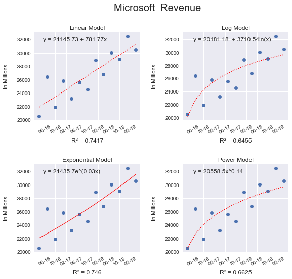
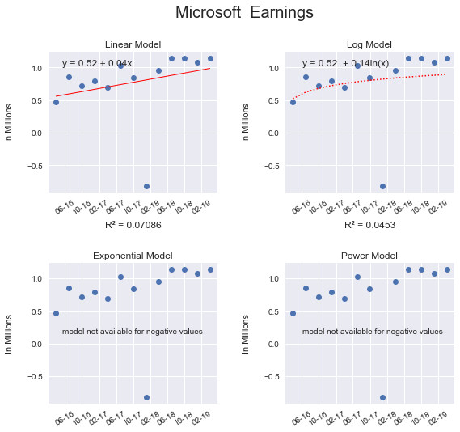
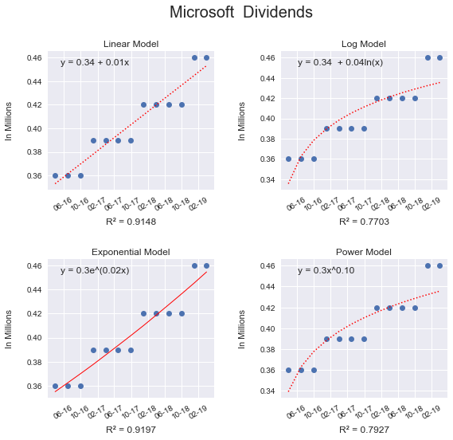

Rachel Friedman CISC 7700 Homework #4 October 18, 2019
*********** Microsoft Revenue **************
Best fit: Exponential Model
R²: 0.75
Equation: y = 21435.7e^(0.03x)
Prediction based on Exponential Model: 32505.93
Actual Value: 33717.00
Error: 1211.07
*********** Microsoft Earnings **************
Best fit: Linear Model
R²: 0.07
Equation: y = 21145.73 + 781.77x
Prediction based on Linear Model: 1.02
Actual Value: 1.70
Error: 0.68
*********** Microsoft Dividends **************
Best fit: Exponential Model
R²: 0.92
Equation: y = 21435.7e^(0.03x)
Prediction based on Exponential Model: 0.46
Actual Value: 0.46
Error: -0.00



In [101]: